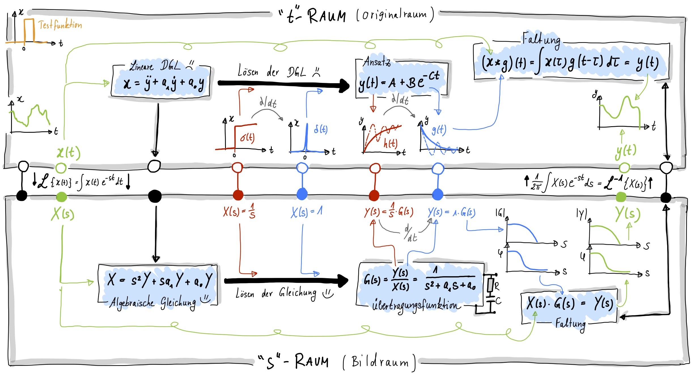

Faltung
Contents
Faltung#
Bei dem Prinzip der black box kenne ich das Innenleben meines Messsystems nicht, und ich kann lediglich mittels Messungen darauf zurück schließen. Je nachdem, welches Signal an den Eingang angelegt wird, erhalte ich ein andere Ausgangssignal. Dies ist in den beiden Bildern aus dem vorausgegangenen Kapitel deutlich zu erkenne. In einem Fall wurde ein Sprung angelegt, im anderen Fall ein Impuls.
Impulsantwort und Faltung im Zeitraum#
In diesem Abschnitt wollen wir uns der Genialität der Impulsantwort in Kombination mit der Faltung widmen. Hierfür müssen wir uns zuerst angucken, was Faltung überhaupt bedeutet.
Die Faltung ist eine mathematische Operation, welche zwischen zwei Funktionen \(f\) und \(g\) ausgeführt werden kann. Die Kurzschreibweise ist das Sternchen zwischen den beiden Funktionen. Allgemein berechnet wird sie über ein Integral, welches die beiden Funktionen beinhaltet, wobei \(g\) hierbei zeitlich gespiegelt und verschoben wird.
Die resultierende „Überlagerung“ zwischen \(f\) und gespiegelten und verschobenen Versionen von \(g\) (man spricht auch von einer „Verschmierung“ von \(f\)) kann z. B. verwendet werden, um einen gleitenden Durchschnitt zu bilden. Das Faltungsintegral kann in drei Schritten verstanden werden:
der Eingang \(g\) wird in der Zeit umgekehrt and zeitverschoben
Dieses umgekehrte und verschobene \(g\) wird nun an \(f\) multipliziert
Und dann wird das Produkt über alle Zeiten summiert (Integralbildung).
Für viele Funktionen wurde das Faltungsintegral bereits bestimmt, da es sehr aufwendig ist, dieses i.Allg. zu lösen. Das Integral zu lösen hilft außerdem kaum dabei genau zu verstehen, was das Integral, bzw. die Faltung, an sich überhaupt bedeutet. Die Faltung kann auch grafisch bestimmt werden, was wir uns in einer Übung einmal genauer ansehen werden.
Das interessante der Faltung ist jedoch, dass wir durch diese mathematische Operation das Systemverhalten oder Ausgangssignale vorhersagen können, solange die Impulsantwort bekannt ist. Man kann sich das vereinfacht so vorstellen, dass eine beliebige Eingangsfunktion \(f(t)\) durch undendliche viele Impulse beschrieben werden, mit infinitesimal kleiner Breite \(dt\). Die Impulsantwort ist für einen Impuls (Delta-Peak) bekannt: sie ist die zeitverschobene Antwort \(g(t-dt)\). Die Überlagerung vieler einzelner Impulse, eine beliebige Eingangsfunktion \(f(t)\) zu modellieren, ist einfach die Aussummerierung aller Impulse. In einem LZI System ist die Impulsantwort ebenfalls die Aufsummerierung der Impulsantworten zu den zugehörigen Impulsen (Linearitätsbedingung). Um den realen Werteverlauf der Eingangsfunktion sicher zu stellen, muss jeder Delta-Peak für jedes Zeitintervall mit dem Funktionswert skaliert werden. Die Homogenitätsbedingung stellt jetzt sicher, dass wir den Ausgang auch entsprechend skalieren dürfen. Mathematisch betrachtet resultiert dies direkt darin, dass wir Antworten von beliebigen Anregungsfunktionen hervorsagen können, indem die Anregungsfunktion \(f(t)\) mit der Impulsantwort gefaltet wird.

Faltung vs. Korrelation vs. Autokorrelation#
Die Faltung ist nicht zu verwechseln mit der Kross-Korrelation von zwei Messsignalen. Obwohl die Integrale sehr ähnlich aussehen, so besteht ein signifikanter Unterschied zwischen diesen beiden Methoden, der sich im Minuszeichen der Verzögerung aufzeigt. Grafisch bedeutet dies, dass das zu faltende Signal im Falle der Kreuz-Korrelation nicht gespiegelt wird, wohingegen es bei der grafischen Faltung zeitlich gespiegelt werden muss. Die Faltung berechnet man in der Regel, wenn man die Antwort eines Messsystems berechnen möchte.
Die Kreuz-Korrelation berechnet man um zu untersuchen, ob Rauschanteile von Signal \(f\) auch in Signal \(g\) vorkommen (Stichwort ist hier der Korrelationsbegriff, welcher häufig auf zwei Signale und nicht Messsysteme angewendet wird).
Die Auto-Korrelation soll hier der vollständigkeitshalber noch einmal als Spezialfall der Kreuz-Korrelation aufgeführt werden. Hier berechnet man, wie ähnlich ein zeit-verschobenes Signal zu sich selbst ist (zeitliche Korrelation).
{kind=link}
Abb. 47 Vergleich von Faltung, Korrelation und Autokorrelation.#
Kombination von Übertragungsfunktionen: Faltung im Frequenzraum#
Auch das hintereinanderschalten von Messsystemen ist im Frequenzraum viel einfacher zu berechnen als im Zeitraum. Eine Hintereinanderschaltung bedeutet allgemein nichts anderes, als die Faltung von Übertragungsfunktionen der jeweiligen Messsysteme. Im Zeitbereich müsste man hierzu das Faltungsintegral lösen. Im Frequenzraum ist die Faltung lediglich eine Multiplikation der Übertragungsfunktionen.
Als Beispiel soll uns ein Bandpass dienen, der aus der Hintereinanderschaltung eines Hoch- und Tiefpasses realisiert werden kann. Im Folgenden Bild sind die Komponenten des Tiefpasses (TP) blau dargestellt, die des Hochpasses (HP) rot dargestellt. Der Tiefpass lässt tiefe Frequenzen bis zu seiner Grenzfrequenz passieren (bis auf die 71% Signalverlust) und der Hoch lässt hohe Frequenzen bis zu seiner Grenzfrequenz passieren. Wir wählen C und R der beiden elektronischen Schaltungen so, dass die Grenzfrequenz der Hochpasses unterhalb der des Tiefpasses liegt, also \(f_\mathrm HP < f_\mathrm{TP}\). Der Amplitudengang ist rechts im folgenden Bild geplottet:

Wie eben schon beschrieben, können im Zeitraum die Übertragungsfunktionen der Einzel-Systeme (hier also Hochpass und Tiefpass) einfach multipliziert werden und man erhält die kombinierte Übertragungsfunktion des resultierenden Bandpasses. Wird die Übertragungsfunktionen in Einheiten von dB gezeichnet, also logarithmisch aufgetragen, so ergibt sich eine weitere grafische Vereinfachung bei der Kombination: In logarithmischen Einheiten können die einzelnen Übertragungsfunktionen in einem Amplitudengangs-Plot addiert (!) statt multipliziert werden.
Zusammenfassung#
Bevor wir zu der Zusammenfassung kommen, soll im folgenden Bild noch einmal dargestellt werden, welche Trick und Tips man sich im Frequenzraum noch von Nutzen machen kann, solange es sich um ein LZI System handelt!
Mittels Fourier-Transformation kann ich jederzeit in den Frequenzraum wechseln und mittels Rücktransformation zu gehen. Egal ob es sich um ein Signal oder ein System (hier wird häufig der Laplace-Raum verwendet) handelt.
Die Ableitung der Sprunganregung ist eine Dirca-Funktion (Impulsanregung). Die Ableitung der Sprungantwort ergibt die Impulsantwort. Die gilt sowohl im Zeit- wie auch im Frequenzraum. (*Frage: Was sieht die zeitliche Ableitung der Fourier-Transformierten 1/s?)
Lösen von DGLs im Laplace-Raum ist eine algebraische Umformung der Gleichung
Lösen von DGLs im Zeitraum benötigt einen Lösungsansatz, eine homogene Lösung, eine spezielle Lösung und verschiedene Schritte inkl. Anfangsbedingungen um die Lösung zu finden.
Die Faltung im Laplace-Raum ist eine Multiplkation
Die Faltung im Zeitraum ist ein Integral
Die Faltung ist generell ein hilfreiches Werkzeug um…
Systeme hintereinanderzuschalten und die Gesamt-Übertragungsfunktion zu berechnen (Faltung der beiden Systeme berechnen)
Die Antwort auf ein beliebiges Eingangssignal mittels Impulsantwort zu bestimmten (Faltung von beliebigem Eingangssignal mit Impulsantwort liefert Antwort des Systems auf das beliebige Eingangssignal)
Die Faltung hilft bei allen drei Problemen: System-Indentifizierungsproblem, Simulationsproblem und Kontrollproblem
